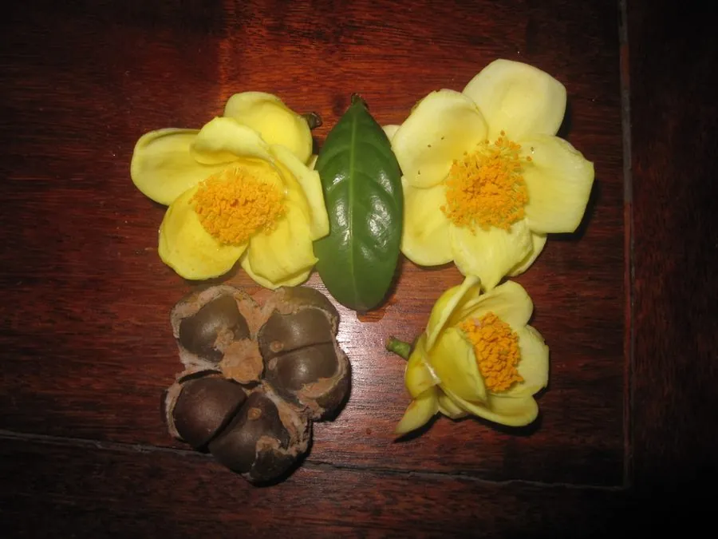

灌木与花木 · 植物界
金花茶 Camellia nitidissima

山茶科常绿灌木，冬季开金黄色花朵，花瓣蜡质光亮，是中国特有的珍稀山茶，被誉为“茶族皇后”。
- 分类
- 门被子植物门纲木兰纲目杜鹃花目科山茶科属山茶属
- 栖息环境
- 海拔 100–500 米的沟谷林下，喜温暖湿润和半阴
- 地理分布
- 中国广西南部；越南北部有分布
- 保护级别
- 中国国家二级重点保护野生植物；野生种群稀少
物种志
金花茶为山茶科山茶属常绿灌木或小乔木，高 2–6 米，树皮灰褐色，嫩枝无毛。叶互生，椭圆形至长椭圆形，革质，边缘具细锯齿。花单生或 2 朵并生于叶腋，花瓣 8–12 枚，金黄色，蜡质光亮，花径 5–8 厘米，花期 11 月至翌年 3 月；果实为蒴果，扁球形，果期翌年秋季。
金花茶原产中国广西南部及越南北部，生于海拔 100–500 米的沟谷林下，是中国特有的珍稀山茶，被誉为“茶族皇后”。它喜温暖湿润、半阴的环境，不耐强光暴晒和严寒，适宜疏松肥沃、排水良好的酸性土壤。金花茶花色金黄、花瓣蜡质，在山茶属中极为罕见，观赏价值极高；叶可制茶，花可入药。因野生资源稀少，被列为国家二级重点保护野生植物。
形态与习性
- 株高2–6 米，树皮灰褐色
- 花期11 月至翌年 3 月，花金黄色
- 果期翌年秋季，蒴果扁球形
- 光照喜半阴，忌强光暴晒
- 水分喜湿润，忌积水
- 土壤疏松肥沃、排水良好的酸性土
- 主要用途珍稀观赏，叶制茶，花入药
趣味知识
- 金花茶是山茶属中少见的黄色花种类，被誉为“茶族皇后”。
- 它的花瓣呈蜡质光泽，在阳光下金光闪闪。
- 金花茶原产中国广西，20 世纪 60 年代才被正式发表。
- 因野生资源稀少，金花茶被列为国家二级重点保护野生植物。